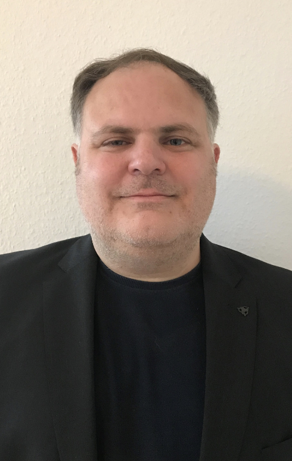

Georgios Smaragdakis is a Full Professor of Computer Science, Chair and Section Head of Cybersecurity
at Delft University of Technology (TU
Delft). He is also an Associated Researcher at Max Planck Institute for
Informatics and
a Principal Investigator and Fellow at the Berlin Institute for the
Foundations of Learning and Data (BIFOLD).
Since 2021, he is Scientific Coordinator of AI for Peace, Justice, and Security initiative at TU Delft.
George was a Professor at Technical University of Berlin (TU Berlin) and Chair for Internet Measurement and Analysis from 2017-2021. From 2014-2017, he was a Marie Skłodowska-Curie fellow at the Massachusetts Institute of Technology (MIT) Computer Science and Artificial Intelligence Laboratory (CSAIL) and a research affiliate with the MIT Internet Policy Research Initiative (IPRI) from 2015-2018. From 2014-2021, he was a Research Collaborator with Akamai Technologies and before that, from 2008-2014, he acted as Senior Researcher at Deutsche Telekom Laboratories (T-Labs). In 2008 he was a research intern at Telefonica Research. He earned the Ph.D. degree in Computer Science from Boston University in 2009 and the Diploma in Electronic and Computer Engineering from the Technical University of Crete.
His research brings a data- and measurement-driven approach to studying and improving Internet security, architecture, and performance and enhancing Web privacy and security.
Selected Honors and Awards
• 2024: Distinguished Reviewer, ACM SIGMETRICS
• 2022: ACM Distinguished Member
• 2022: IETF/IRTF Applied Networking Research Prize
• 2021: Best paper award at ACM SIGCOMM
• 2021: Communications of the ACM Research Highlights
• 2021: IEEE Senior Member
• 2020: ACM Senior Member
• 2020: IETF/IRTF Applied Networking Research Prize
• 2019: Best of ACM SIGCOMM Computer Communication Review (CCR)
• 2019: IETF/IRTF Applied Networking Research Prize
• 2019: Best paper award at ACM CoNEXT
• 2018: Best paper award at ACM Internet Measurement Conference (IMC)
• 2017: Best paper award at IEEE INFOCOM
• 2016: Best paper award at ACM Internet Measurement Conference (IMC)
• 2015: Best paper award at ACM CoNEXT
• 2015: European Research Council (ERC) Starting Grant Award (ResolutioNet)
• 2013: Marie Skłodowska-Curie International Outgoing Fellowship
• 2011: Best paper award at ACM Internet Measurement Conference (IMC)